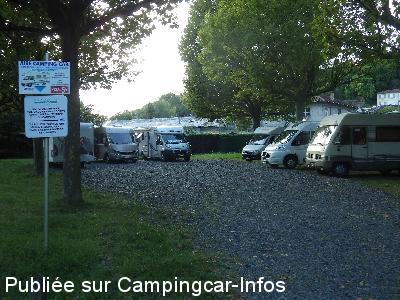
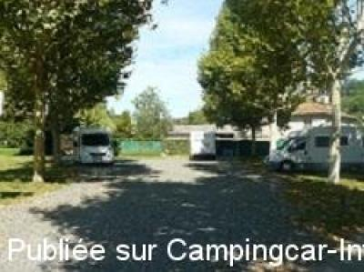

ASN = Aire de services avec stationnement nuit possible de :
TRÉVOUX
(N° 549)
Accès/adresse :
Chemin du camping
01600 TRÉVOUX
01600 TRÉVOUX
Latitude : (Nord) 45.93966° Décimaux ou 45° 56′ 22′′
Longitude : (Est) 4.76923° Décimaux ou 4° 46′ 9′′
Tarif : 2015
Stationnement : 5 €
Services, électricité : 3 €
Jetons au camping
Hors période à l'Office de Tourisme
Type de borne : EURO-RELAIS
Services :


Poubelles
Autres informations :
Aire extérieure au camping
Tel : +33(0)474 003 632
ou +33(0)474 084 483
http://www.tourisme-trevoux.com

Le 01/09/2014 par Dietmar

Le 17/08/2012 par alain38
de
lalou
le 04/04/2015 :
nous sommes passés à Trevoux le vendredi 20 mars Aire vraiment pas accueillante les vidanges sales et vous êtes a coté des poubelles et sur une place coincée dans les arbres sur des cailloux un peu gros Nous avons passé notre chemin
nous sommes passés à Trevoux le vendredi 20 mars Aire vraiment pas accueillante les vidanges sales et vous êtes a coté des poubelles et sur une place coincée dans les arbres sur des cailloux un peu gros Nous avons passé notre chemin
de
Dietmar
le 01/09/2014 :
this aire has moved 100 m down the road. It is only a parking on gravel under trees, close to several garbage containers. No illumination at night. Euro-relais is in front of the campground operating with a chip, sold at 2,50 at the camping
this aire has moved 100 m down the road. It is only a parking on gravel under trees, close to several garbage containers. No illumination at night. Euro-relais is in front of the campground operating with a chip, sold at 2,50 at the camping
de
roblor
le 13/06/2013 :
§ De passage le 13 juin 2013, aire tristounette coincée entre les poubelles et les WC, et de + payante 5 € pour uniquement stationner.
Nous avons passé notre chemin
@+
§ De passage le 13 juin 2013, aire tristounette coincée entre les poubelles et les WC, et de + payante 5 € pour uniquement stationner.
Nous avons passé notre chemin
@+
de
champavier
le 08/08/2009 :
De passage à Trevoux, on a voulu vidanger. L'emplacement n'est pas du tout accessible pour les CC à vidange latérale, risque d'endommager le dessous du CC.
De passage à Trevoux, on a voulu vidanger. L'emplacement n'est pas du tout accessible pour les CC à vidange latérale, risque d'endommager le dessous du CC.